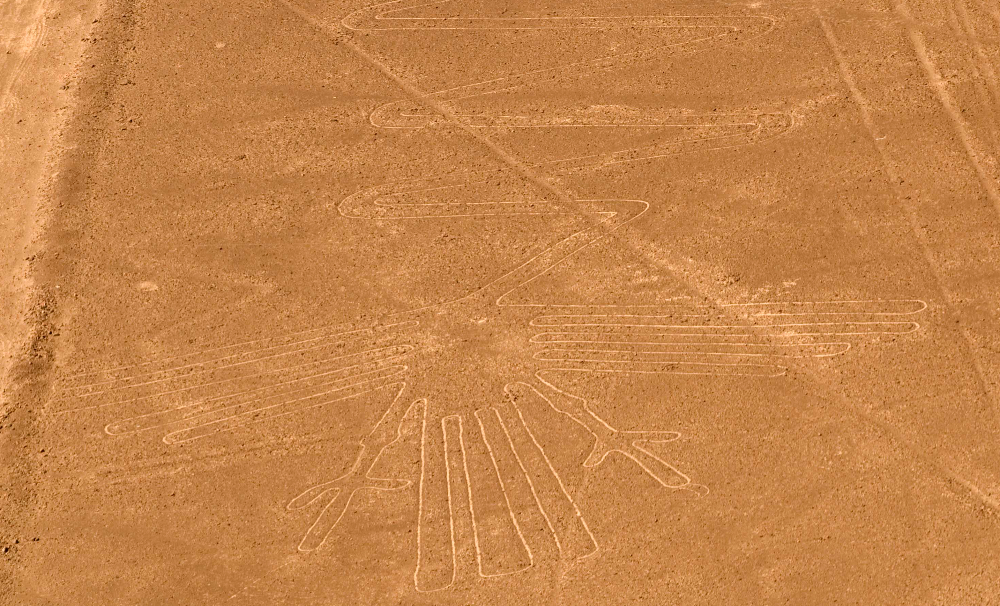
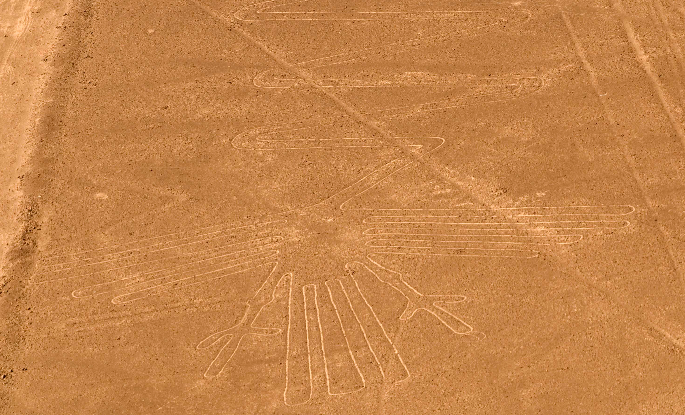

The Nazca Lines are a group of very large geoglyphs formed by depressions or shallow incisions made in the soil of the Nazca Desert in southern Peru. They were created between 500 BCE and 500 CE.
Some of the Nazca lines form shapes that are best seen from the air (~1,500 ft, 457 m), though they are visible from the surrounding foothills and other high places.The shapes are usually made from one continuous line. The largest ones are about 370 m (1,200 ft) long. Because of its isolation and the dry, windless, stable climate of the plateau, the lines have mostly been preserved naturally.


 



Anthropologists, ethnologists, and archaeologists have studied the ancient Nazca culture to try to determine the purpose of the lines and figures. One hypothesis is that the Nazca people created them to be seen by deities in the sky.
Jim Woodmann theorized that the Nazca lines could not have been made without some form of flight to observe the figures properly. Based on his study of available technology, he suggests a hot-air balloon was the only possible means of flight at the time of construction. To test this hypothesis, Woodmann made a hot-air balloon using materials and techniques he understood to have been available to the Nazca people. The balloon flew, after a fashion. Most scholars have rejected Woodmann's thesis as ad hoc, because of the lack of any evidence of such balloons.
Extremely rare changes in weather may temporarily alter the general designs. As of 2012, the lines are said to have been deteriorating because of an influx of squatters inhabiting the lands.
In December 2014, Greenpeace activists irreparably damaged the Nazca Lines while setting up a banner within the lines of one of the famed geoglyphs. The activists damaged an area around the hummingbird by grinding rocks into the sandy soil. Access to the area around the lines is strictly prohibited and special shoes must be worn to avoid damaging the UN World Heritage site. Greenpeace claimed the activists were "absolutely careful to protect the Nazca lines." This is contradicted by video and photographs showing the activists wearing conventional shoes (i.e. not special protective shoes) while walking on the site. Greenpeace has apologized to the Peruvian people, but Luis Jaime Castillo, Peru's vice minister of cultural heritage, called the apology "a joke," because Greenpeace initially refused to identify the vandals or accept responsibility.